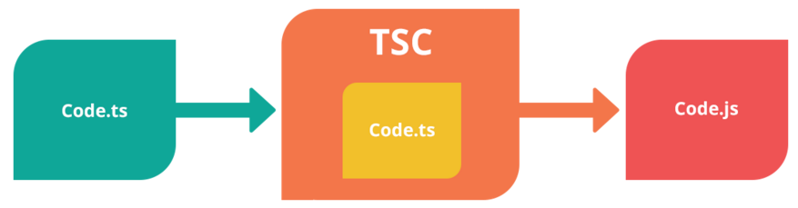

Typescript
DeveloperTypescript - Anders Hejlsberg

Typescript -
is a strongly typed, object oriented, compiled language.
is just JavaScript
Summary:
TypeScript is JavaScript plus some additional features
Components
- Language
- The TypeScript Compiler (TSC)
- The TypeScript Language Service
Features (Benefits)
- support Object Oriented Programming concepts;
- support compilation;
- support strong-typing;
- supports other JS libraries and supports type definitions ;
- support ES6 features.
Оbject-oriented
Typescript support concepts like interfaces, generics, inheritance, and method access modifiers;
Example of interface:
interface IScore {
scorestudentId: string;
calculateScore(): number;
}
class OutputStudentScore implements IScore {
scorestudentId: string;
calculateScore(): number {
return 0;
}
}Example of inheritance:
class Person{
Firstname:string;
}
class RSSchool extends Person {
Role:string
private AddPerson(){
this.Role="Student";
this.FirstName="Kitty";
}
}Example of generic:
function identity (arg: T): T {
return arg;
}
let output = identity ("myString");
Example of access modifiers:
class RSSchool{
public taskName:string;
private taskSolution:string;
}
Compilation
TypeScript will compile the code and generate compilation errors, if it finds some sort of syntax errors. This helps to highlight errors before the script is run.
Strong Static Typing
Types are had to define when declaring variables and you cannot assign other values other than the type defined which is very possible in JavaScript.
Typing

Example:
let num: number = 209;
let name: string = 'Alena';
let isPresent: boolean = true;
Installing TypeScript
There are two main ways to get the TypeScript tools:
- Via npm:npm install -g typescript
- By installing TypeScript’s Visual Studio plugins
Useful link:
Thanks for your attention
*No animals were harmed in making this presentation)